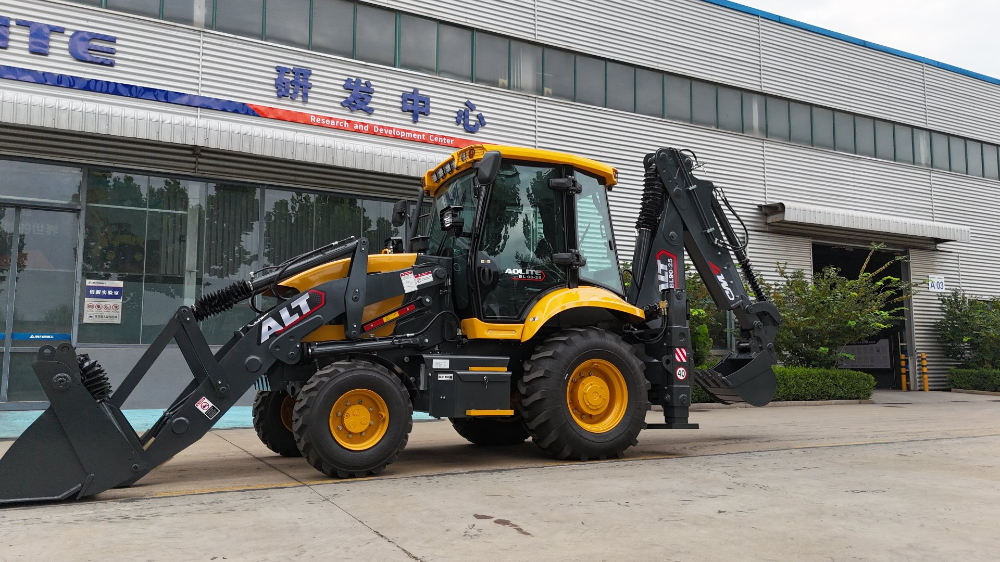

This is the machine you are evaluating — photographed where it was built. The R&D center behind it is where the design, testing, and continuous improvement happen.
The Factory Floor Test: What a Real Manufacturer Looks Like
Every serious manufacturer has one thing in common: you can watch the machine being made. Before you evaluate anything else, ask for a live video walk-through of the production floor. A real factory does not hesitate — the floor is its best salesman. While you watch, look for three things:
- Is there an actual welding and assembly line, or just a warehouse? A manufacturer fabricates frames, welds the loader arms, and assembles machines in a process that runs daily. An assembler buys ready frames and bolts components together. Both can produce a working machine — the difference is control over quality, which translates directly into consistency between unit one and unit fifty.
- Is there a testing area? Machines should be started, run, and checked before they leave the floor. Ask to see a machine being tested — engine idle, hydraulic cycles, steering, brakes. A supplier who can show you a running test is a supplier with nothing to hide.
- Whose name is on the machine? Many factories produce for several brands. That is not automatically bad — OEM production is normal worldwide — but you should know whether you are buying from the manufacturer or from a trader standing next to the manufacturer. One of them controls quality; the other only controls the invoice.
If you cannot visit in person, video is a reasonable second best — but make it a live call, not a pre-recorded tour. Ask them to walk to the welding station, the assembly line, and the test bay, and ask questions while the camera is moving. The way a factory answers off the cuff tells you more than any polished video.
Component Transparency: What's Actually Inside
The single most useful document a Chinese manufacturer can give you is a component list — written, not verbal. Which engine, which axles, which gearbox, which hydraulic pump, which hoses? Every reputable factory has this list ready because its customers ask for it. Every evasive one will tell you "standard domestic parts" and change the subject.
- Engine: Chinese backhoe loaders commonly use engines from well-known domestic makers. The brand matters less than the fact that it is named, and that spares are available in your region.
- Axles and gearbox: Ask for the model numbers. A manufacturer that uses recognized axle and gearbox platforms can get you parts fast when something wears out — which it will, because every machine wears.
- Hydraulics: Pump, valves, cylinders, hoses — the items that fail first in hard work. If the supplier cannot name the hydraulic component brands, that is a red flag regardless of the price.
Component transparency is also your strongest negotiation lever. When every part is named, quotes become comparable on an even basis — and you will discover what my price transparency article explains in detail: among manufacturers meeting international standards, price differences are mostly about service network and support, not about mystery savings.

Ask for the component list in writing. Named parts are comparable parts — unnamed ones are promises.
Quality Systems You Can Verify, Not Just Claim
ISO 9001 certificates are printed on almost every wall in China. They are a starting point, not proof. What you can actually verify:
- Incoming inspection: Do they check components when they arrive from suppliers? A factory that tests what it receives catches problems before they become your problems.
- Process and final inspection: Is there a checklist a machine must pass before it is released? Ask for a copy of the test report from the last machine shipped — item by item: engine, hydraulics, brakes, steering, bucket functions.
- Who does the checking? Independent quality staff, or the same worker who assembled the machine? The answer tells you whether the system is real or decorative.
For larger orders, third-party inspection before shipment is normal practice and a fair request. The cost is small compared to the cost of discovering a problem after the container lands. My inspection checklist article walks through the exact items to verify on a backhoe loader before you accept delivery.
After-Sales at Distance: The Real Differentiator
Here is where I will be most direct, because this is the part I care about most in my own work. Every factory sells the same promise — "good quality, good price." The difference between suppliers shows up after your payment, in four small questions:
- Do they keep critical spares in stock? Filters, seals, hydraulic components, pins and bushings. A supplier with a real parts shelf can ship you the part in days. A supplier who orders everything after you ask can take weeks — and your machine is idle the whole time.
- What is their documented response time? Ask how long it takes to reply to a technical question, and to dispatch a spare part. Get it in writing if you can.
- Is the warranty scope in the contract? What is covered, what is excluded, and how claims are handled. Vague warranty language is worth nothing when something breaks.
- How do they handle a problem they caused? This you cannot verify before buying — but you can probe it: ask a difficult technical question and see if they deflect or dig in. The pattern will repeat after the sale.
For me, this is not a marketing line: after-sales is where the service begins, not where it ends. The long-term measure of a supplier is patience, responsibility, response speed, and a refusal to pass the blame. Price is an important part of cost analysis — but never the whole story.
Payment Terms That Protect Both Sides
The standard structure in the industry is 30% deposit to start production, 70% balance before shipment — often payable against a scanned copy of the shipping documents. This is fair to both sides: the factory is not financing your whole machine, and you are not paying the full amount before seeing evidence the machine exists.
- Be cautious with 100% advance payment. There are legitimate reasons a small factory asks for it, but in the current market there is rarely a good reason for a buyer to accept it. If a supplier insists, that alone is information.
- Ask for an inspection milestone. Payment before shipment should be tied to your acceptance — via third-party inspection or a video inspection on the agreed date.
- Keep the structure simple and transparent. If the terms ever feel one-sided — full payment up front, or a refusal to accept any inspection milestone — that itself is information about how the rest of the relationship will run.
Payment structure is not about distrust — it is about alignment. A supplier who welcomes a verifiable process is a supplier who plans to keep doing business.
Inspection and Shipping: Between Payment and Port
The weeks between your deposit and the container closing are when everything that was promised gets tested. Build these steps into the timeline:
- Agree the spec sheet in the contract — the same one used for the quote, with component brands named. If the delivered machine differs from the contract, you have a document, not an argument.
- Schedule inspection before packing. Third-party or video, on an agreed date, using the inspection checklist. This is also a good moment to record the machine's serial number.
- Confirm the document set. Commercial invoice, packing list, bill of lading, plus any certification documents your destination market requires — including a certificate of origin, which we arrange together with you according to your country's requirements. My import guide covers the documentation side in more detail.
- Keep the test video. A short video of the machine running before loading — engine, hydraulics, functions — is cheap insurance against disputes at the port.
Sea freight from China to most world ports is routine, and shipping itself is rarely the problem. The problems live in the details: mismatched documents, unannounced spec changes, and parts that were promised but never packed. Every step above exists to catch those before the container closes.

Inspection before packing, documents before payment, and a test video before the container closes — the three habits that protect international buyers.
A Practical 5-Step Shortlist Process
If you are starting from zero and want a repeatable process, here is the sequence I recommend:
- Send the same inquiry to 3–5 factories. Include your machine size, attachments, and destination country. Then compare how they respond: a serious factory asks about your soil, your workload, and your parts situation; a lazy one quotes a price in one email and asks for payment in the second.
- Run the component transparency test. Ask for the written component list. Compare the quality of the answers, not the speed.
- Do the video floor walk. Live, with questions. Twenty minutes is enough to feel the difference between a factory and a showroom.
- Request test reports and references. Recent machine test reports, plus contact with one or two buyers in markets similar to yours. A factory with nothing to hide supplies these quickly.
- Structure the deal with milestones. 30/70 payment, inspection before shipment, document set confirmed in the contract, warranty scope written down.
This process does not guarantee a perfect machine — nothing does. But it filters out most of the risk, and it puts you in a negotiation with a partner, not a gamble. If you want to see how this works in practice on specific machines, the BL 90-25 and BL 105-25 pages show the configuration we build and test here.
Vivian's Bottom Line
I am not going to defend every Chinese factory — I have seen the ones I would not buy from. But I also refuse the lazy assumption that "China-made" means "take a chance." The truth is more boring and more useful: the difference between manufacturers is the system behind them, not the country on the label.
You are not looking for the cheapest factory. You are looking for the one that will still answer your messages, send the spare part, and take responsibility when something goes wrong — three, five, ten years from now. That is the supplier worth finding. If you want help evaluating a quote or a factory, that is exactly the kind of conversation I am good at.
Comparing Chinese Manufacturers?
Send me the quotes you have and I will tell you what to look for in each one — components, payment structure, and what the after-sales promise is really worth. No pressure, just a straight read from inside the industry.
Request a Quote for My Project